Fast Pathfinding via Symmetry Breaking
Daniel Harabor
NICTA and The Australian National University
daniel dot harabor at nicta dot com dot au
In this article I attempt to explain
path symmetry: a property of uniform-cost grid maps and other regular
search domains which can significantly slow down pathfinding. I describe
how symmetry manifests itself and briefly discuss some approaches that
other people have tried to improve things. Finally, I introduce two
recent ideas from my doctoral research: Rectangular Symmetry Reduction
(RSR) and Jump Point Search (JPS). Both are optimality-preserving
techniques that explicitly identify and eliminate symmetry in order
to speed up pathfinding by an order of magnitude and more. I discuss their
strengths, weaknesses and observed performance on two popular video-game
benchmarks kindly made
available by Nathan Sturtevant
and BioWare:
Baldur's Gate II and Dragon Age: Origins.
Acknowledgements:
I would like to give due credit to my amazing collaborators without whom I could not have come so far nor
achieved so much.
I would also like to thank the generous academic institutions that have supported this work.
In particular:
- The RSR algorithm was developed in
conjunction with Adi
Botea and Philip
Kilby. It first appeared in the 2011 proceedings of the
Syposium on Abstraction, Reformulation and Approximation (SARA).
-
JPS was developed in conjunction with
Alban Grastien and first
appeared in the 2011 proceedings of the National Conference of the
Association for the Advancement of Artificial Intelligence (AAAI).
- All authors are affiliated with NICTA
and the Australian National University.
-
NICTA is funded by the Australian Government as represented by the Department of
Broadband, Communications and the Digital Economy and the Australian Research
Council through the ICT Centre of Excellence program.
Electronic copies of the academic papers mentioned here are available from
my homepage.
1. Path Symmetries
Often appearing as a pathfinding domain in areas such as robotics
and video games, grid maps are a simple yet popular method for
representing an environment.
As it turns out, grids are also academically interesting for the
following reason: between any given pair of locations, there usually exists many
possible paths.
Sometimes these
paths represent alternative ways of reaching one location from the other but
more often they are symmetric in the sense that the only difference
between them is the order in which moves appear.
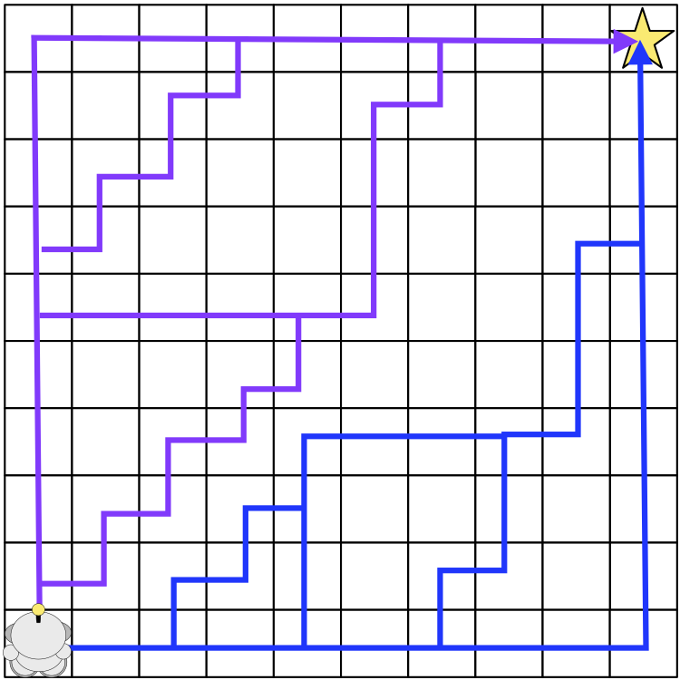
Figure 1: Symmetry. A simple grid-based pathfinding problem.
For simplicity (but not in general) we allow only straight moves
and not diagonal.
Many optimal length paths could be returned as
the solution; we highlight only a few. Notice that each one
is a permutation of all the others. In such cases we say that a
symmetry exists between the paths.
Before proceeding further it is necessary to establish some precise
terminology. For example: what exactly is a path?
Traditionally, Computer Scientists define paths as ordered sequences
of connected edges. The conjunction of these edges represents a walk in
the search graph from some arbitrary
start location to some arbitrary goal location.
However this definition is too general to capture the
idea of symmetry in grid maps. For that, we need a slightly different
notion of a path:
Definition 1: Grid Path. A path in a grid map is an ordered sequence of
vectors, where each vector represents a single step from one node
on the grid to an adjacent neighbouring node.
The distinction between edges and vectors is an important one as it allows us to
distinguish between paths that are merely equivalent (i.e. of the same
length) and those which are
symmetric. But what, exactly, does it mean to have a symmetric
relationship between paths?
Definition 2: Path Symmetry. Two grid paths are symmetric if
they share the same start and end point and one can be derived from
the other by swapping the order of the constituent vectors.
As a clarifying example, consider the problem instance in Figure 1.
Each highlighted path is symmetric to the others since they all have the
same length and they all involve some permutation of 9 steps up and 9
steps right.
In the presence of symmetry a search algorithm such as A* is forced to
explore virtually every location along each optimal path. In Figure 1,
depending on how we break ties, A* might expand every node on the entire
map before reaching the goal.
Further, A*
will usually consider many other nodes that appear promising but that are
not on any optimal path. For example, each time A* expands a node from
the fringe of the search, it has already likely found almost every
symmetric shortest path leading to that node
(again, depending on how we break ties when two nodes appear equally good). But
this effort is in vain if these expansions do not lead the search closer
to the goal and instead into a dead-end.
Thus arises
the question which I will attempt to answer in this article: how do we
deal with symmetry when pathfinding on grid maps?
1.1 Existing Methods For Speeding Up Search
A large number of techniques have been proposed to speed
up pathfinding.
Most can be classified as variations on three themes:
-
Reducing the size of the search space through abstraction.
Algorithms of this type are fast and use little memory but compute paths
which are usually not optimal and must be refined via further
search.
Typical examples: HPA* [2], MM-Abstraction [9].
-
Improving the accurary of heuristic functions that guide search.
Algorithms of this type usually pre-compute and store distances
between key pairs of locations in the environment. Though fast and
optimal, such methods can incur signficant memory overheads which
is often undesirable. Typical examples: Landmarks [6], True Distance
Heuristics [10].
-
Dead-end detection and other state-space pruning methods.
Algorithms of this type usually aim to identify areas on the map
that do not need to be explored in order to reach the goal
optimally.
Though not as fast as abstraction or memory heuristics, such methods
usually have low memory requirements and can improve
pathfinding performance by several factors.
Typical examples: Dead-end Heuristic [1], Swamps [8], Portal
Heuristic [7].
My work in this area can be broadly classified as a search space
pruning technique. Where it differs from existing efforts is that,
instead of trying to identify areas that do not have to be crossed during
search, I aim to identify and prune symmetric nodes that prevent the
fast exploration of an area. This idea nicely complements
existing search-space reduction techniques and, as it turns out, also
complements most
grid-based abstraction methods and memory heuristic approaches.
1.2 Rectangular Symmetry Reduction and Jump Point Search
My co-authors and I have developed two distinct approaches for
explicltly identifying and eliminating path symmetries on grid maps.
I outline them here very briefly and in more detail in an upcoming post:
-
Rectangular Symmetry Reduction (RSR).
RSR [4][5] can be described as a pre-processing algorithm which identifies
symmetries by decomposing the grid map into empty rectangular regions.
The central idea, then, is to avoid symmetries by only ever expanding
nodes from the perimeter of each rectangle and never from the interior.
-
Jump Point Search (JPS).
JPS [3] consists of two simple neighbour pruning rules that
are applied recursively during search. Each rule considers the
direction of travel to a given node from its parent (either a straight
step or a diagonal step) in order to prune the set of local
neighbours (tiles) around that node.
The central idea is to avoid
any neighbours that could be reached optimally from the parent of
any given node. In this way we are able to identify and avoid,
on-the-fly, large sets of symmetric path segments; such as those in Figure 1.
RSR can pre-process most maps in under a second and has a very small
memory overhead: we need to keep only the id of the parent rectangle each
node is associated with (and the origin and dimensions of each such
rectangle). By comparison, JPS has no pre-processing requirements and no
memory overheads. Both algorithms are optimal and both can speed up A* by an order of
magnitude and more. Figure 2 shows a typical example; For reference, I
also include a screenshot for vanilla A*.
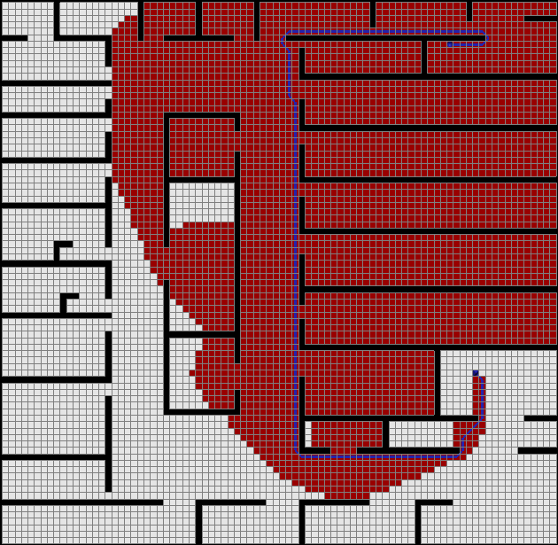
(a) A*
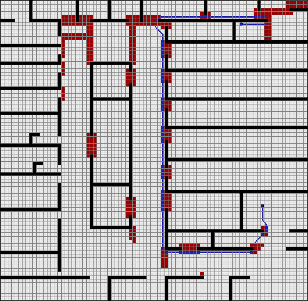
(b) A* + RSR
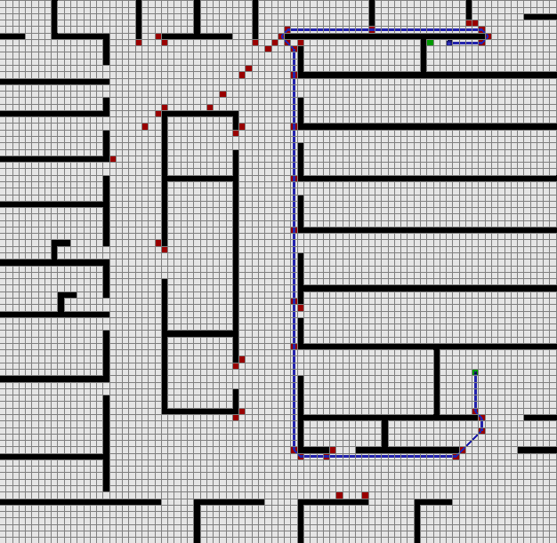
(c) A* + JPS
Figure 2: Search Effort.
All nodes marked red must be expanded before the optimal path
to the goal (marked in blue) is found.
Notice that, in the case of A*, many nodes on the fringe of the search
(i.e. on the edge of the red area) can only be reached by
paths that cross large regions of empty space.
These paths usually have many symmetric alternatives and
considering them all can require a substantial number of
node expansion operations. RSR and JPS can detect and
eliminate such symmetries and both reach the goal much sooner.
Coming up:
Rectangular Symmetry Reduction (RSR) [4][5]
is a new pre-processing algorithm that
speeds up optimal pathfinding by decomposing an arbitrary uniform-cost grid
map into a set of empty rectangles.
The idea is to avoid symmetries during search by only
ever expanding nodes from the perimeter of each empty rectangle, and never
from the interior.
To ensure optimal travel through each rectangle we will also add a
series of macro edges that allow units to "jump" from one side of a
rectangle's perimeter to the directly opposite side.
(This remainder of this section, and the next, give a mechanical
overview of the algorithm and its properties. If you're impatient, or
don't care about such things, you can skip ahead and check out some
screenshots.)
RSR can be described in 3 simple steps. Steps 1 and 2 are
applied offline; their objective is to identify and prune symmetry from
the original grid map.
The third step is an online node insertion procedure; its objective is
to preserve optimality when searching for paths in the symmetry-reduced
grid map.
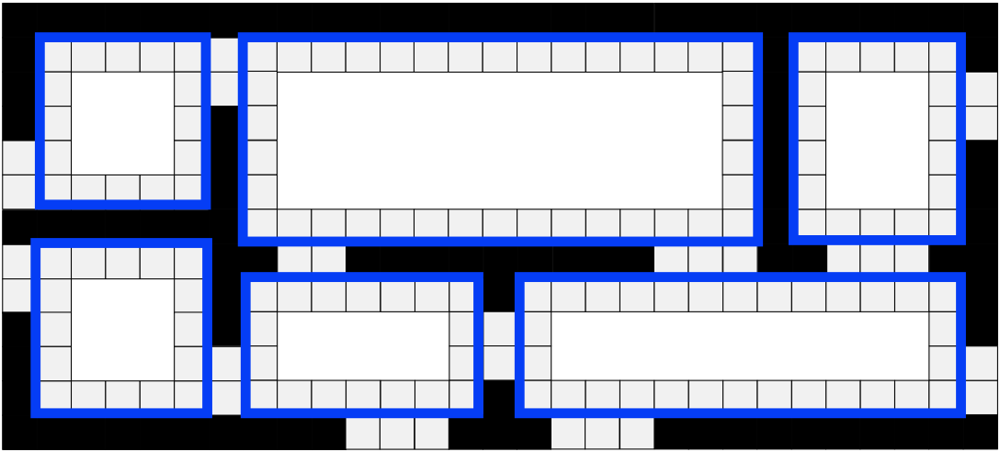
RSR Step 1: Grid Decomposition
Decompose the grid map into a set of obstacle-free
rectangles.
The size of the rectangles can vary across a map, depending
on the placement of the obstacles.
Once the decomposition is complete, prune all nodes from the
interior, but not the perimeter, of each empty rectangle.
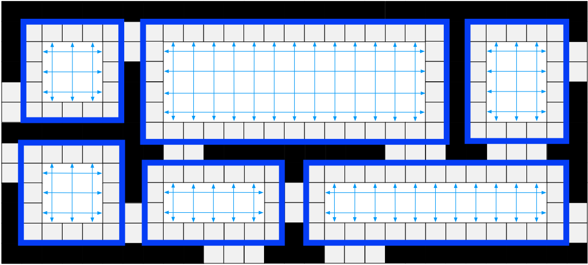
RSR Step 2: Addition of Macro Edges
Add a series of macro edges that connect each
node on the perimeter of a rectangle with other nodes
from the perimeter.
In a 4-connected map (shown here for simplicity) a
single macro edge between nodes on opposite
sides of each rectangle will suffice. If diagonal
moves are allowed, a set of macro edges
(as described in [4]) will be needed
instead.
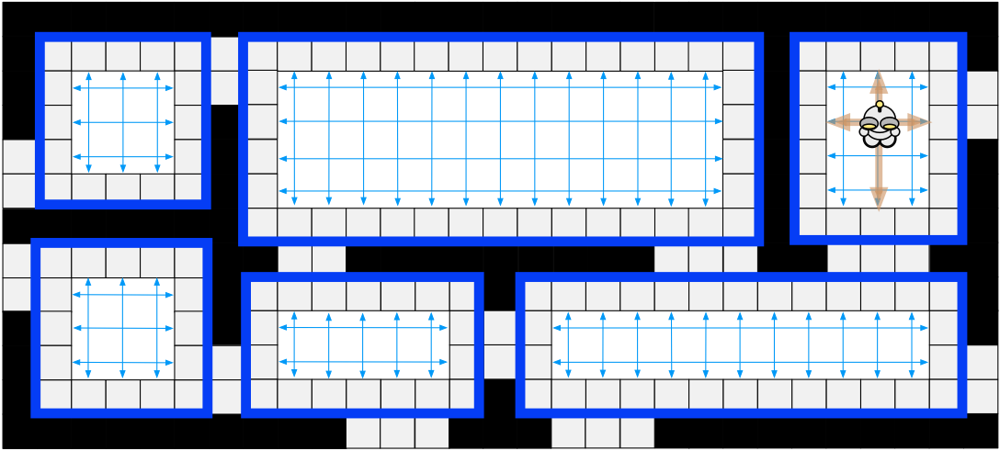
RSR Step 3: Online Insertion
When the start or goal is located in
the interior of an empty rectangle, we use a temporary
node re-insertion procedure.
In a 4-connected map (shown here for
simplicity) we connect the temporary node, online,
to the 4 nearest perimeter nodes. A similar operation,
involving sets of edges from each perimeter side,
is used when diagonal moves are allowed.
2.1 Properties and Performance
RSR has several attractive properties:
-
It preserves optimality.
-
It has a small memory overhead in practice.
-
Node insertion (Step 3) can be performed in constant time.
-
It can speed up A* search by anywhere from several factors to an
order of magnitude.
I will focus on points 2 and 4 in the remainder of this section. A
thorough discussion of points 1 and 3 (including proofs) can be found in
[4].
Memory Requirements:
In the most straightforward implement of RSR we need to store the id of
the parent rectangle for each of the n traversable nodes in the original grid.
We also need to store the origin and dimensions of each rectangle
(macro edges can be identified on-the-fly and
do not need to be stored explicitly).
This means that, in the worst case, we might need to store up to 5n
integers.
In practice however we can usually do much better.
For example: there is little benefit in storing or assigning nodes to
rectangles with few or no interior nodes (1x1, 2x1, 2x2, 3x2, 3x3 etc.).
We can also avoid the parent id overhead altogether and only store the set of identified
rectangles. The only downside is that, during insertion (Step 3
above), we now need to search for the
parent rectangle of the start and goal -- instead of being able to identify
it in constant time.
Performance:
We evaluated RSR on a number of benchmark grid map sets taken
from Nathan Sturtevant's freely available pathfinding library, Hierarchical Open Graph.
One of the map sets is from the game Baldur's Gate II: Shadows of Amn.
The other two map sets (Rooms and Adaptive Depth) are both synthetic,
though the latter could be described as semi-realistic.
I will give only a summary of our findings; full results and
discussion is available in the following papers: [4]
[5].
In short: we observed that in most cases RSR can consistently speed up A* search by a
factor of between 2-3 times (Baldur's Gate), 2-5 times (Adaptive Depth)
and 5-9 times (Rooms). In some cases the gain can be much higher: up to 30 times.
We found that the extent of the speed gains will be dependent on the topography of
the underlying grid map. On maps that feature large open areas or which
can be naturally decomposed into rectangular regions, RSR is highly
effective. When these conditions do not exist, the observed speed gains are
more modest.
This performance is competitive with, and often better than, Swamps [4];
another state-of-the-art search space reduction technique. We did not
identify a clear winner (each algorithm has different strengths) but did
notice that the two methods are orthogonal and could be easily combined.
Below are screenshots of A* + RSR in action. In each case tiles marked red
must be explored in order to find the optimal solution (marked in blue).
For comparison, I also show the number of tiles explored by vanilla A*
when solving the same problem instances. You can click on each image for a larger
version.
Figure 2: Search Effort.
Comparative pathfinding examples from our experimental results.
Images (a) to (c) are total nodes expanded by A* in order to
find the optimal path to the goal (marked blue). Images (d) to
(f) are total nodes expanded by A* + RSR. The
respective domains are (from left to right): Baldur's Gate, Adaptive
Depth and Rooms. Notice that A* + RSR ignores many symmetric
path segments and typically reaches the goal with much less effort.
In the next section I will discuss Jump Point Search [3]: a
similar-yet-different symmetry breaking technique which builds on some of
the ideas introduced here. Like RSR, Jump Point Search is highly effective and simple
to apply; unlike RSR it can be applied online and has no memory overhead and
no pre-processing requirements. In most cases, JPS is also faster.
Jump Point Search (JPS) [3] is an online symmetry breaking algorithm
which speeds up pathfinding on uniform-cost grid maps by "jumping over"
many locations that would otherwise need to be explicitly considered.
Unlike other similar algorithms JPS requires no preprocessing and has no
memory overheads. Further, it is easily combined with most existing
speedup techniques -- including abstraction and memory heuristics.
It can speed up A* search by over an order magnitude and more.
The remainder of this section, and the next, describe the mechanical details and
algorithmic properties of Jump Point Search. If you don't care for such
things, feel free to jump ahead and check out some screenshots.
JPS can be described in terms of two simple pruning rules which are
applied recursively during search: one rule is specific to
straight steps, the other for diagonal steps.
The key intuition in both cases is to prune the set of immediate
neighbours around a node by trying to prove that an optimal path
(symmetric or otherwise) exists from the parent of the current node to
each neighbour and that path does not involve visiting the current
node.
Figures 1 outlines the basic idea.
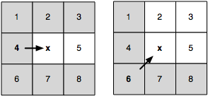
Figure 1: Neighbour Pruning
Node
x is currently being expanded. The arrow indicates
the direction of travel from its parent, either straight or
diagonal.
In both cases we can immediately prune all grey neighbours as
these can be reached optimally from the parent of
x without ever going through node
x.
We will refer to the set of nodes that remain after pruning as
the natural neighbours of the current node. These are marked
white in Figure 1. Ideally, we only ever
want to consider the set of natural neighbours during expansion.
However, in some cases, the presence of obstacles may mean that we need
to also consider a small set of up to k additional nodes (0
≤ k ≤ 2). We say that these
nodes are forced neighbours of the current node.
Figure 2 gives an overview of this idea.
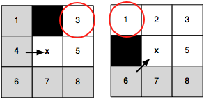
Figure 2: Forced Neighbours
Node
x is currently being expanded. The arrow indicates
the direction of travel from its parent, either straight or
diagonal.
Notice that when
x is adjacent to an obstacle
the highlighted neighbours cannot be pruned; any alternative
optimal path, from the parent of
x to each of these
nodes, is blocked.
We apply these pruning rules during search as follows: instead of
generating each natural and forced neighbour we instead recursively
prune the set of neighbours around each such node.
Intuitively, the objective is to eliminate symmetries by recursively "jumping over" all
nodes which can be reached optimally by a path that does not visit the
current node.
We stop the recursion when we hit an obstacle or when we find a so-called jump point
successor. Jump points are interesting because they have neighbours that cannot be reached
by an alternative symmetric path: the optimal path must go through the current node.
The details of the recursive pruning algorithm are reasonably
straightforward: to ensure optimality we need only assign an ordering to
how we process natural neighbours (straight steps before diagonal).
I will not attempt to outline it further here; the full details are in
the paper and my aim is only to provide a flavour for the work.
Figures 3 gives two examples of the pruning algorithm in action.
In the first case we identify a jump point by recursing straight; in the second case
we identify a jump point by recursing diagonally.
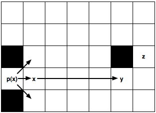
(a) Jumping Straight
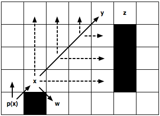
(b) Jumping Diagonally
Figure 3: Jumping Examples. Node
x is currently
being expanded.
p(x) is its parent.
(a) We recursively apply the straight pruning rule and identify
y as a jump point successor of x.
This node is interesting because it has a neighbour z
that cannot be reached optimally except by a path that visits
x then y. The intermediate nodes are never
explicitly generated or even evaluated.
(b) We recursively apply the diagonal pruning rule and identify
y as a jump point successor of x. Notice that
before each diagonal step we first recurse straight (dashed
lines). Only if both straight recursions fail to identify a jump point
do we step diagonally again. Node w, which is simply a forced
neighbour of x, is generated as normal.
3.1 Properties and Performance
Jump Point Search is nice for a number of reasons:
-
It is optimal.
-
It involves no pre-processing.
-
It requires no extra-memory overheads.
-
It can consistently speed up A* search by over 10 times; making it
not only competitive with, but often better than, approximate
techniques such as HPA* [2].
Properties 1-3 are interesting theoretical results, and rather
surprising, but I will not address them further here. My
main objective in this article is simply provide a flavour for the work;
for a full discussion, including proofs, please see the original paper [3].
Property 4 is perhaps of broadest practical interest so I will give a
short summary of our findings below.
We evaluated JPS on four map sets taken
from Nathan Sturtevant's freely available pathfinding library, Hierarchical Open Graph.
Two of the benchmarks are realistic, originating from popular BioWare video games Baldur's
Gate II: Shadows of Amn and Dragon Age: Origins.
The other two Adaptive Depth and Rooms are synthetic
though the former could be described as semi-realistic. In each case we
measured the relative speedup of A* + JPS vs. A* alone.
Briefly: JPS can speed up A* by a factor of between 3-15 times (Adaptive
Depth), 2-30 times (Baldur's Gate), 3-26 times (Dragon Age) and 3-16
times (Rooms). In each case the lower figure represents average
performance for short pathfinding problems and the higher figure for
long pathfinding problems
(i.e. the longer the optimal path to be found, the more benefit is
derived from applying JPS).
What makes these results even more compelling is that in 3 of the 4
benchmarks A* + JPS
was able to consistently outperform the well known
HPA* algorithm [2]. This is remarkable as A* + JPS is always performing
optimal search while HPA* is only performing approximate search.
On the remaining benchmark, Dragon Age, we found there was
very little to
differentiate the performance of the two algorithms.
Caveat emptor: It is important to highlight at this stage that A* +
JPS only achieves these kids of speedups because each benchmark problem
set contains a large number of symmetric path segments (usually manifested
in the form of large open areas on the map). In such cases JPS can exploit
the symmetry and ignore large parts of the search space. In the process
A* both generates and expands a much smaller number of nodes and reaches
the goal much sooner.
When there is very little symmetry to
exploit however we expect that our gains will be more modest.
Below in Figure 4 are screenshots of A* + JPS in action. In each case
tiles marked red must be explored in order to find the optimal solution
(marked in blue). For comparison, I also show the number of tiles
explored by A* + RSR and vanilla A* when solving the same problem
instances. You can click on each image for a larger version.
Baldur's Gate Benchmark Example
Adaptive Depth Benchmark Example
Rooms Benchmark Example
Figure 4: Search Effort.
Comparative pathfinding examples from our experimental results.
Images in the first column show total nodes expanded by A* in
order to find the optimal path to the goal (marked blue). Images
in the middle and last columns are total nodes expanded by A* +
RSR and A* + JPS respectively.
Notice that A* + JPS ignores many symmetric path segments (more
than A* + RSR even) and typically reaches the goal with much less effort.
4. Final Thoughts
The explicit identification and elimination of symmetries in pathfinding
domains is an idea that until now has received little attention in the
academic literature.
Approaches for dealing with symmetry, such as Jump Point Search, provide us
with powerful new tools for reducing the size of explicit regular search
spaces. By eliminating symmetry we speed up not just A* but entire classes
of similar pathfinding algorithms.
Also, consider: JPS is entirely orthogonal to almost every other
speedup technique applicable to grid maps. Thus, there is no reason why we
couldn't combine it, or other similar methods, with hierarchical
pathfinding approaches, memory heuristics or even other
optimality-preserving state-space reduction techniques.
That means the results presented thus far are only the tip of the
iceberg in terms of performant grid-based pathfinding methods.
Another exciting aspect of this work is the possiblities it opens for
further research. For example: could we pre-process the map and go even
faster? Or: are there analogous jumping rules that one could develop for weighted grids?
What about other domains? Could we apply the lessons learned thus far to
help solve other interesting search problems?
The answers to the first two questions already appear to be positive;
the third is something I want to explore in the near future. Regardless
of how it all turns out, one thing is certain: it's an exciting time to
be working on pathfinding!
References
[1] Y. Björnsson and K Halldörsson.
Improved Heuristics for Optimal Path-finding on Game Maps.
In AAAI Conference on Artificial Intelligence and Interactive Digital
Entertainment (AIIDE), 2006.
[2] A. Botea, M. Müller, and J. Schaeffer.
Near Optimal Hierarchical Path-finding.
In Journal of Game Development (Issue 1, Volume 1), 2004.
[3] D. Harabor and A. Grastien.
Online Graph Pruning for Pathfinding on Grid Maps.
In National Conference on Artificial Intelligence (AAAI), 2011.
[4] D. Harabor, A. Botea, and P. Kilby.
Path Symmetries in Uniform-cost Grid Maps.
In Symposium on Abstraction Reformulation and Approximation
(SARA), 2011.
[5] D. Harabor and A. Botea.
Breaking Path Symmetries in 4-connected Grid Maps.
In AAAI Conference on Artificial Intelligence and Interactive
Digital Entertainment (AIIDE), 2010.
[6] A. V. Goldberg and C. Harrelson.
Computing The Shortest Path: A* Search Meets Graph Theory.
In SIAM Symposium on Discrete Algorithms (SODA), 2005.
[7] M. Goldenberg, A. Felner, N. Sturtevant and J.
Schaeffer.
Portal-Based True-Distance Heuristics for Path Finding.
In Symposium on Combinatorial Search (SoCS), 2010.
[8] N. Pochter, A. Zohar, J. S. Rosenschein and A. Felner.
Search Space Reduction Using Swamp Hierarchies.
In National Conference on Artificial Intelligence (AAAI), 2010.
[9] N. R. Sturtevant.
Memory-Efficient Abstractions for Pathfinding.
In AAAI Conference on Artificial Intelligence and
Interactive Digital Entertainment (AIIDE), 2007.
[10] N. R. Sturtevant, A. Felner, M. Barrer, J. Schaeffer and N.
Burch.
Memory-Based Heuristics for Explicit State Spaces.
In International Joint Conference on Artificial Intelligence (IJCAI).
2009.
{kind=link}
{kind=link}
{kind=link}
{kind=link}
{kind=link}
{kind=link}
{kind=link}
{kind=link}
{kind=link}
{kind=link}
{kind=link}
{kind=link}
{kind=link}
{kind=link}